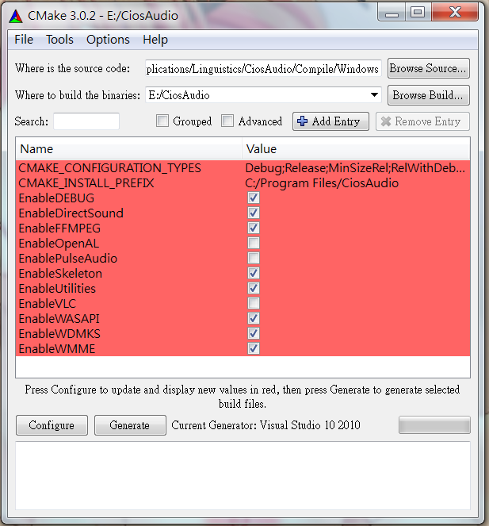
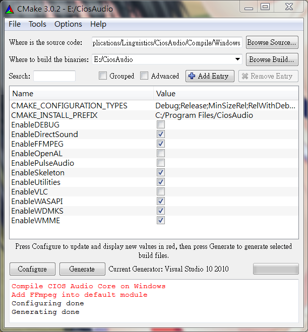

Windows平台编译
在环境已经配置好的状况下，编译CIOS Audio Core是相当简单的：|
mkdir BuildCiosAudioCore |
如此即可产生CiosAudio.sln
x64
|
cmake -G "Visual Studio 10 Win64" $CIOSAUDIOROOTDIR\Compile\Windows |
打开Visual Studio编译CiosAudio.sln即可产生CaCore.lib。
修改设定
|
mkdir BuildCiosAudioCore |

Configure
Generate

打开Visual Studio编译修改设定后的CiosAudio.sln即可产生CaCore.lib。